Android app setup
-
Welcome screens are shown when you first launch the app, and the app requests permission to determine your location (which is pretty obvious if you think about it, as the app is supposed to do just that).
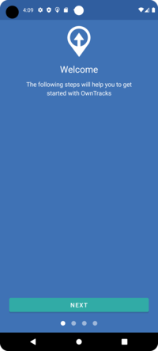 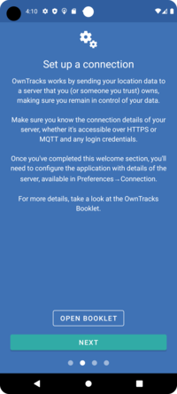 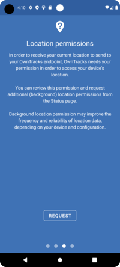 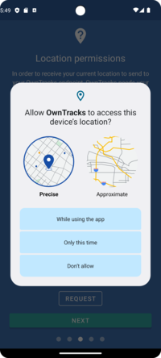 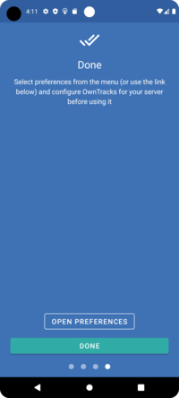 -
After the preliminaries are complete, you will configure the app to connect to your broker. (Use the inline configuration we show you below when using Quicksetup.)
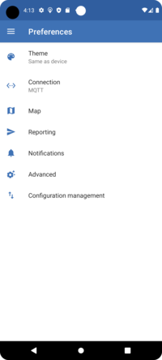 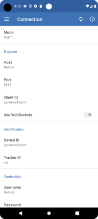 -
Correctly configured, you should then see a map. Clicking the "play" button on the top will bring up the monitoring mode panel which defaults to Significant Changes.
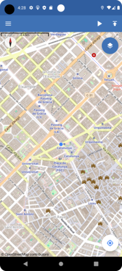 
-
Click on the hamburger to access the menu
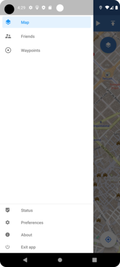 -
Using inline configuration with Quicksetup, access your OwnTracks site, the one you set up with Quicksetup, and login with your username and password. The, click on the configure it with a click link which will download a ready-made configuration and launch it in OwnTracks. Clicking the checkmark on the top right will cause OwnTracks for Android to configure itself accordingly.
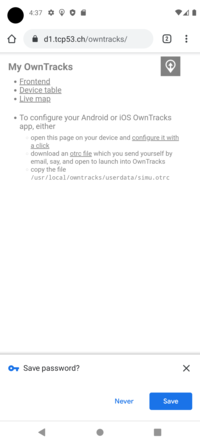 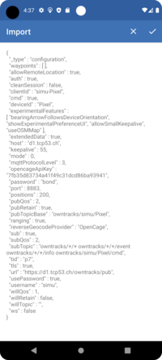 -
If several Friends are using your server, you might see them on the map. Sliding the bottom sheet up will reveal details of their location.
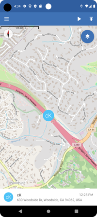 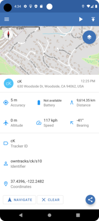